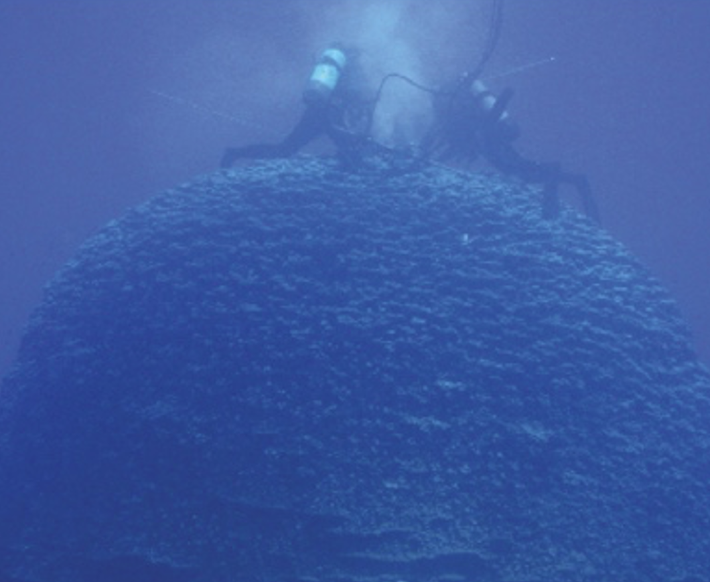
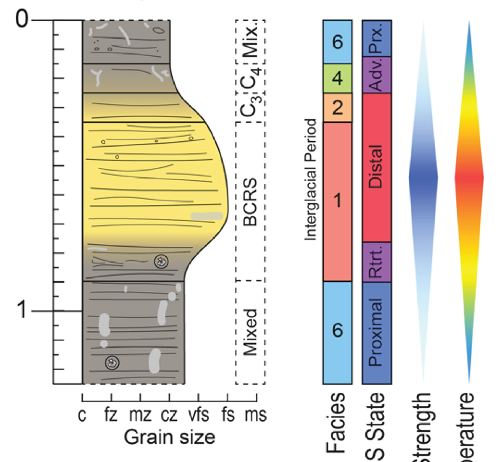
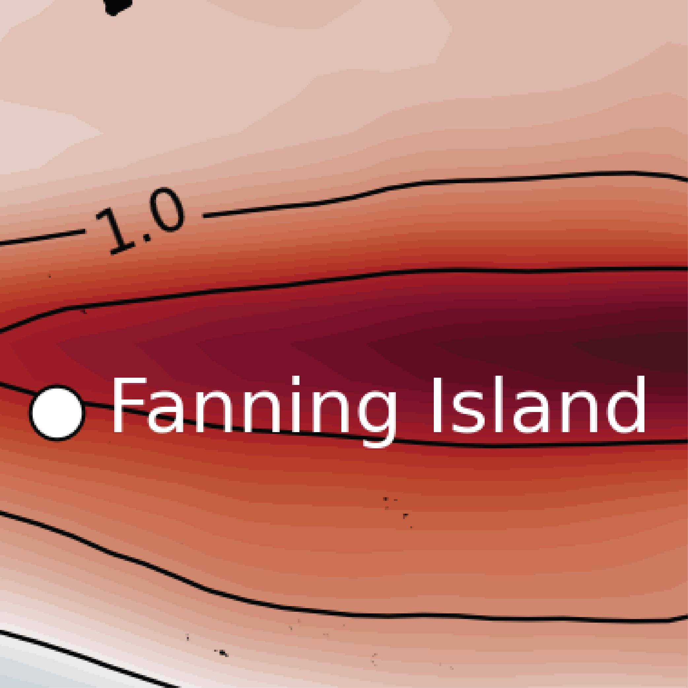
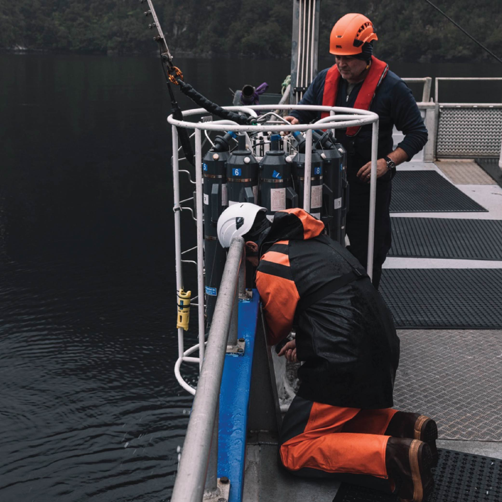

|
Matt Illing I'm a paleoclimatologist investigating past changes in Earth’s climate and oceans to better understand future climate change. My current research focuses on developing long Indo-Pacific climate records from coral skeletons. I am a PhD candidate at Stanford Oceans, working with Rob Dunbar. I received my undergraduate degree from the University of Auckland, where I studied geography and geology. When not playing with mass spectrometers, I run (a lot). |

|
ResearchI study how Earth’s past climate can inform predictions of future environmental change. My research uses geochemical archives preserved in corals and marine sediments to reconstruct past oceanic and atmospheric conditions and to examine how ocean circulation and climate variability evolve across timescales ranging from months to millennia. High-resolution records of global climate rarely extend beyond the satellite era, particularly over the oceans, yet such records are essential for constraining the long-term behavior of climate variability, including ENSO and Pacific decadal variability, quantifying changes in ocean heat content, and placing recent anthropogenic warming within a geological context. I am also interested in the role natural systems may play in marine carbon dioxide removal (mCDR), particularly the capacity of coastal environments such as fjords to sequester carbon in marine sediments. Some of my research projects are below. I'm an AAUS Science Diver and NAUI Rescue Diver with current DAN DFA Pro first-aid certification. |

|
Reconstructing southwestern Indian Ocean climate from Mauritian corals
Matthew Illing, Rob Dunbar, Dave Mucciarone, Shakeel Jogee, Krish Seetah. in preparation Video High-resolution coral geochemical records from the southwestern Indian Ocean reconstruct centuries of SST variability, revealing how ENSO, SIOD and IOBM have evolved and whether Pacific climate influence has weakened under recent warming. |
|  |
Easter Island (Rapa Nui) Corals Record Shifts in Pacific Decadal Variability and ENSO Expression Since 1863 CE
Matthew Illing, Rob Dunbar, Dave Mucciarone. in preparation Paper / Data / Code Easter Island corals provide a 150-year record of southeastern Pacific sea surface temperature, revealing shifts in Pacific Decadal Variability and ENSO expression. |
|  |
Chilean margin sediments reveal millennial-scale Patagonian ice sheet fluctuations and Antarctic Circumpolar Current variability over the last 160,000 years
Matthew Illing, Lorna Strachan, Chris Moy, Christina Riesselman, Vincent Rigalleau, Helge Arz, Frank Lamy. (2025) Paper / Data Chilean margin sedimentation is sensitive to ice sheet extent and current speed. The Patagonian Ice Sheet advanced to the shelf edge at least 22 times over the last 160,000 years. Antarctic circumpolar current speed declines 51% during glacial periods. |
|  |
Fanning Island Corals
Matthew Illing, Rob Dunbar, Dave Mucciarone. Ongoing... Fanning Island (Tabuaeran) corals are sensitive to ENSO and Pacific Decadal Variability. Check back soon to see what we find in the δ18O data! |
|  |
Fiordland
Matthew Illing, ... Ongoing... Fiordland is likely one of Aotearoa New Zealand’s largest carbon sinks, but its storage capacity is under threat with potentially significant consequences. Check back soon to see what we learn! |
Publication ListIlling, M.T. Strachan, L. J., Moy, C. M., Riesselman, C. R., Rigalleau, V., Arz, H. W., Lamy, F. (2025). Chilean margin sediments reveal millennial-scale Patagonian ice sheet fluctuations and Antarctic Circumpolar Current variability over the last 160,000 years. Quaternary science reviews, 356, 109280 |
Education
Stanford University, Stanford, CA, USA
University of Auckland, Auckland, New Zealand |
Teaching
Stanford University, Stanford, CA 2023–2025
University of Auckland, Auckland, New Zealand 2022
|
Service and MentoringShort description of mentoring |
Honors and AwardsShort description of Awards... |
|
You have reached the end...for now. |